Computersysteme
Computing on Bits
Simon Mayer
University of St.Gallen
Bachelor in Computer Science
Computersysteme (1,904)
From insight to impact.
Course Syllabus
Computersysteme | Institute of Computer Science | University of St.Gallen
2Our Journey So Far…
| Step | Building blocks | Where |
|---|---|---|
| Information | Binary digits + context: numbers, text, pixels and colors, instructions | Lecture 1: done! |
| Logic + arithmetic | School mathematics (logic, set theory); logic operations (NOT, NOR, …, NAND) | Today |
| Electronics | Logic gates from electronic components (today: transistors) | Today |
| Calculator | Adder circuits and circuits for other arithmetic functions: a general-purpose calculator! | Today |
| Processor | Function selector, arithmetic/logic unit, control unit, registers: voilà, a CPU! | Lecture 3 |
| Programs | Instruction sets, machine code and assembly language | Lectures 3 and 4 |
Computersysteme | Institute of Computer Science | University of St.Gallen
3Today's Menu
Information Basics: Numbers, Bits, Bytes, Encodings
Computing Basics: Transistors and Circuits
Processor Basics
Computersysteme | Institute of Computer Science | University of St.Gallen
4Remember: Bits Are Binary Digits
- Logic: basic representation of the logical values True and False
- Practicality: many easily feasible physical representations (punched card, electrical switch, SSD, fibre optics, …)
- G.W. Leibniz: using binary, arithmetic and logic can be combined!
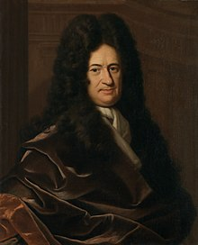
Recap of lecture 1
Computersysteme | Institute of Computer Science | University of St.Gallen
5Computing on Bits: Transistors
“Transistors are the key active components in practically all modern electronics. The transistor is thus considered to be one of the greatest inventions of the 20th century.”
Because it can be used as an electronic switch!
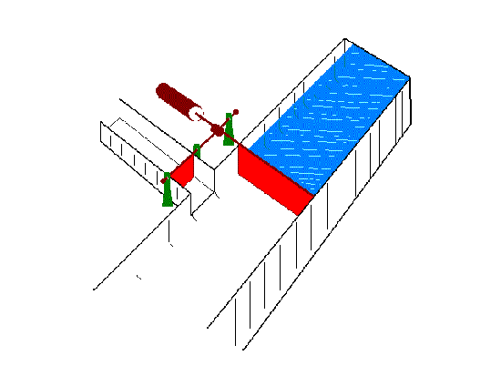
Price, Robert W. (2004): Roadmap to Entrepreneurial Success
Computersysteme | Institute of Computer Science | University of St.Gallen
6Global Production of Transistors per Capita
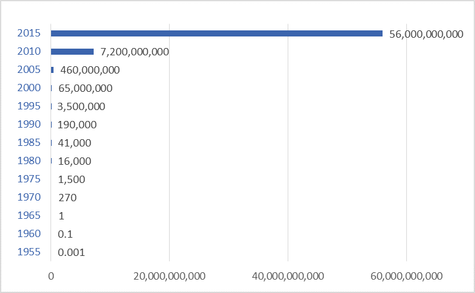
darrinqualman.com/global-production-transistors
Computersysteme | Institute of Computer Science | University of St.Gallen
7«Economies of Scale»
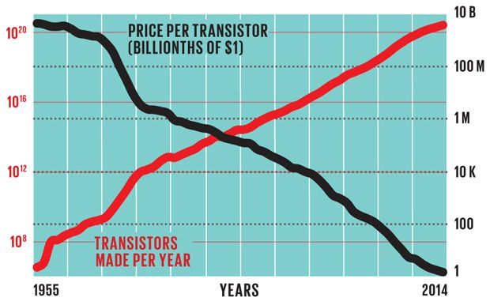
IEEE Spectrum: Transistor production has reached astronomical scales
Computersysteme | Institute of Computer Science | University of St.Gallen
8Schematics of a Transistor
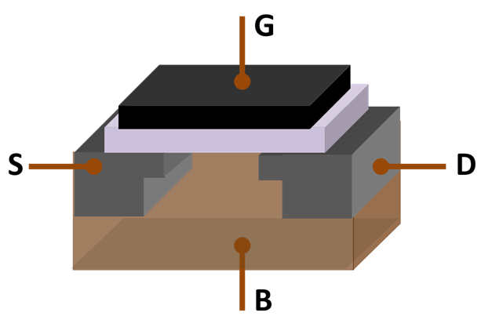
Picture: Wikipedia: Transistor
Computersysteme | Institute of Computer Science | University of St.Gallen
9Now we're ready to engineer a computer!
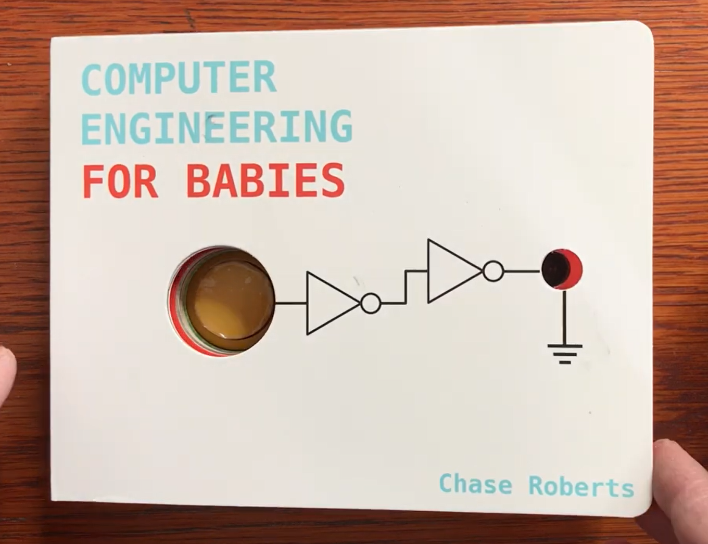
Computer Engineering for Babies
Computersysteme | Institute of Computer Science | University of St.Gallen
10Computing on Bits: Boolean Algebra
- George Boole (1815-1864): Boolean algebra
- Charles Sanders Peirce (1839-1914): logic operations using electronic components
- In a letter to A. Marquand (1886), Peirce suggests using electrically operated switches called relays for «and» and «or» operations
boolean x = 1; boolean y = 0; boolean z = 1; NOT ~x => 0 ~y => 1 AND (x & y) => 0 (x & z) => 1 OR (x | y) => 1 (y | y) => 0 XOR (x ^ y) => 1 (x ^ z) => 0
Computersysteme | Institute of Computer Science | University of St.Gallen
11“(…) it is by no means hopeless (…) to make a machine for really very difficult mathematical problems.”
Charles S. Peirce
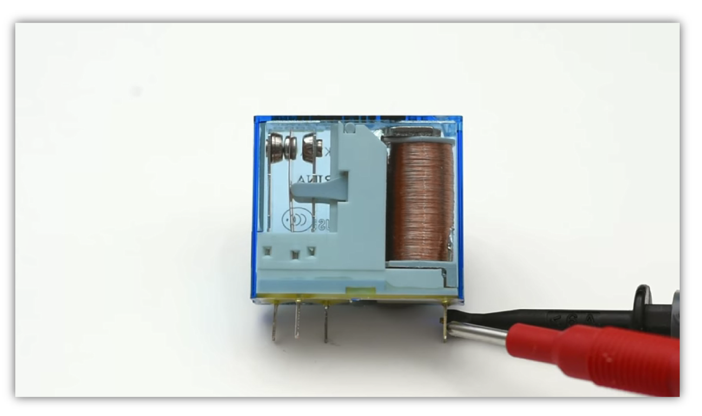
- Back then: relays!
- Today: transistors!
- Good that we're not dealing with electromechanics anymore ;-)
Computersysteme | Institute of Computer Science | University of St.Gallen
12Claude Shannon: Connection of Boolean Algebra and Digital Logic
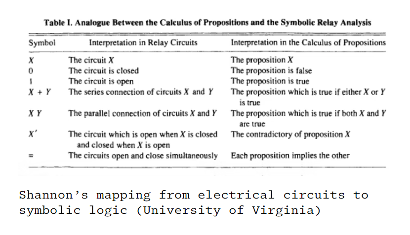
The Atlantic · Claude Shannon at MIT: The best master's thesis in history
Computersysteme | Institute of Computer Science | University of St.Gallen
13Computing on Bits: Logic Gates
Example:
- There is a voltage on the output Q only if there is a voltage on both inputs A and B
- Only if both inputs A and B are set to TRUE, the output Q is set to TRUE: that's an AND
Computersysteme | Institute of Computer Science | University of St.Gallen
14XOR Function: Q = (A XOR B)
| Input A | Input B | Output Q |
|---|---|---|
| 0 | 0 | ? |
| 0 | 1 | ? |
| 1 | 0 | ? |
| 1 | 1 | ? |
Computersysteme | Institute of Computer Science | University of St.Gallen
15XOR Function: Q = (A XOR B)
| Input A | Input B | Output Q |
|---|---|---|
| 0 | 0 | 0 |
| 0 | 1 | 1 |
| 1 | 0 | 1 |
| 1 | 1 | 0 |
We'll need this as well for our computer… ;-)
Computersysteme | Institute of Computer Science | University of St.Gallen
16Computing on Bits: NAND
- Henry Sheffer (1882-1964): functional completeness of NAND
- All operations over a binary number space can be represented using combinations of NOT-AND («NAND») gates
- Equivalently: all logic operations can be computed with combinations of NAND gates
- Proofs: Wikipedia: NAND logic
Computersysteme | Institute of Computer Science | University of St.Gallen
17If a NAND receives the same input twice, it computes a NOT
| Input A | Input B | Output Q |
|---|---|---|
| 0 | 0 | 1 |
| 0 | 1 | 1 (does not matter: inputs different!) |
| 1 | 0 | 1 (does not matter: inputs different!) |
| 1 | 1 | 0 |
With A = B, only the first and the last row occur: Q = NOT A.
Computersysteme | Institute of Computer Science | University of St.Gallen
18How to Build a NAND Gate?
- Two transistors, T1 (input A) and T2 (input B), between the output Q and ground
- A pull-up resistor connects Q to the supply voltage (e.g., 5 volts)
- So we need two transistors to produce a NAND. We produce billions of transistors per second…
- We can compute with lots of NANDs ;-)
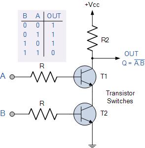
Computersysteme | Institute of Computer Science | University of St.Gallen
19It's easier to see than you think!
| A | B | T1 | T2 | Q |
|---|---|---|---|---|
| 0 | 0 | open | open | 1: Q is connected to the supply voltage (via the pull-up resistor) |
| 1 | 0 | closed | open | 1: Q is connected to the supply voltage |
| 0 | 1 | open | closed | 1: Q is connected to the supply voltage |
| 1 | 1 | closed | closed | 0: the supply voltage is connected to ground, Q carries no voltage |
That's the NAND function, Q = (A NAND B): that's what we wanted!!
Computersysteme | Institute of Computer Science | University of St.Gallen
20Did you do the homework?
Solve the first five levels of the NAND Game!
nandgame.comComputersysteme | Institute of Computer Science | University of St.Gallen
21Any Questions / Comments / Doubts / Concerns?
Take-Home
- Through standard encodings, any symbol can be represented as a binary number
- We can (relatively easily and cheaply) create NAND gates
- Combinations of NAND gates can express all logic functions, and thus all functions over a binary number space

Therefore, we have a universal calculator (or, «computer»). At least in principle; we'll build it next ;-)
Computersysteme | Institute of Computer Science | University of St.Gallen
22Our Journey So Far…
| Step | Building blocks | Where |
|---|---|---|
| Information | Binary digits + context: numbers, text, pixels and colors, instructions | Lecture 1: done! |
| Logic + arithmetic | School mathematics (logic, set theory); logic operations (NOT, NOR, …, NAND) | Done! |
| Electronics | Logic gates from electronic components (today: transistors) | Done! |
| Calculator | Adder circuits and circuits for other arithmetic functions: a general-purpose calculator! | Next |
| Processor | Function selector, arithmetic/logic unit, control unit, registers: voilà, a CPU! | Lecture 3 |
| Programs | Instruction sets, machine code and assembly language | Lectures 3 and 4 |
Computersysteme | Institute of Computer Science | University of St.Gallen
23Let's build a Calculator!
You already know how to do this; you just need to transfer some knowledge from school.
As we have seen, in binary, logic and arithmetic are equivalent. So we should be able to do this calculation with a circuit of only NAND gates.
6 6 0b 1b + 6 + 3 + 1b + 1b ----- ----- ---- ---- 12 9 1b 0b carry 1 carry 0 carry 0 carry 1
And if we can add, we can also multiply, subtract, divide… (remember)
Computersysteme | Institute of Computer Science | University of St.Gallen
24Now YOU build a Calculator!
- You have two inputs, A and B, which are both binary digits
- You have two outputs, S(um) and C(arry), which are both binary digits
- If a bit A and a bit B go in, S should hold the sum while C should hold the carry
- Example: A = 1 and B = 1 should yield S = 0 and C = 1
1b + 1b ----- 10b The «0» is the sum bit S The «1» is the carry bit C
Computersysteme | Institute of Computer Science | University of St.Gallen
25Walkthrough
Computersysteme | Institute of Computer Science | University of St.Gallen
26A Half-Adder Adds Two Bits
- The sum output should be 0 if both inputs are 0. It should also be 0 if an overflow occurs. In other words, it should be 1 if either A or B is 1 (but not both). That's an exclusive OR!
- The carry output should be 1 if both A and B are 1. That's an AND!

Computersysteme | Institute of Computer Science | University of St.Gallen
27From the Half-Adder to the Full Adder
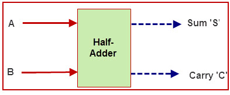
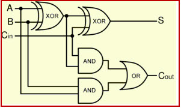
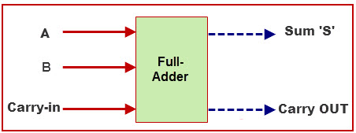
Computersysteme | Institute of Computer Science | University of St.Gallen
28Let's build a larger Adder
- First 4-bit number
- A0 … A3
- Second 4-bit number
- B0 … B3
- Result
- S0 … S3
- Carry-out
- C4
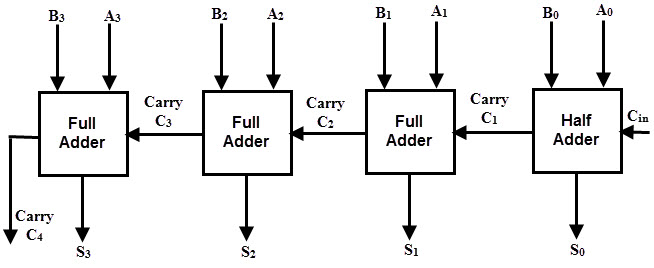
Computersysteme | Institute of Computer Science | University of St.Gallen
29A 4-Bit Adder in One Chip
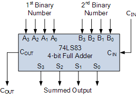
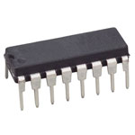
Computersysteme | Institute of Computer Science | University of St.Gallen
30Test yourselves: 0110b + 0010b
A = 00102 and B = 01102
Computersysteme | Institute of Computer Science | University of St.Gallen
31C1 = 0, C2 = 1, C3 = 1, C4 = 0; S0 = 0, S1 = 0, S2 = 0, S3 = 1. So 0010 + 0110 = 1000 (2 + 6 = 8).Do it yourself!
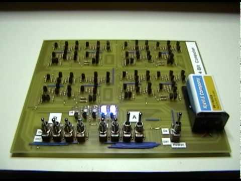
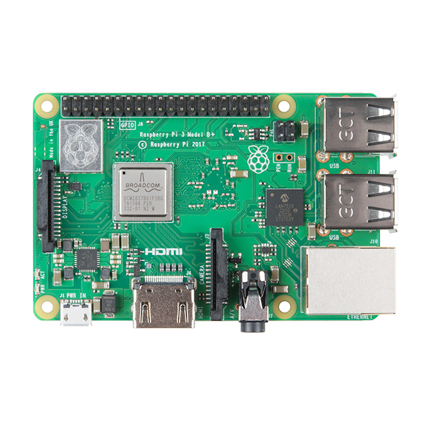
Buy transistors, build a simple 4-bit computer (video from 4:30), or start with these kits.
Computersysteme | Institute of Computer Science | University of St.Gallen
32Let's build a LARGER Adder
- 1× 8-bit adder = 8× 1-bit adders that are connected properly
- 2× XOR + 2× AND + 1× OR per full adder: 40 gates in total, about 80 transistors in total
- Inputs a0 … a7 and b0 … b7, result s0 … s7, and a carry-out
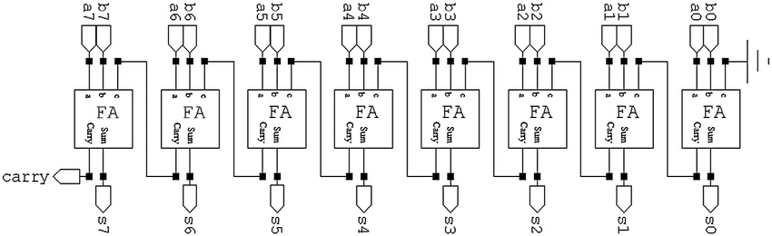
Computersysteme | Institute of Computer Science | University of St.Gallen
33Thank you, Moore!
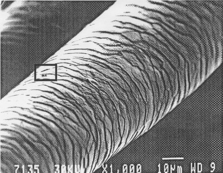
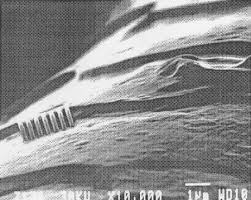
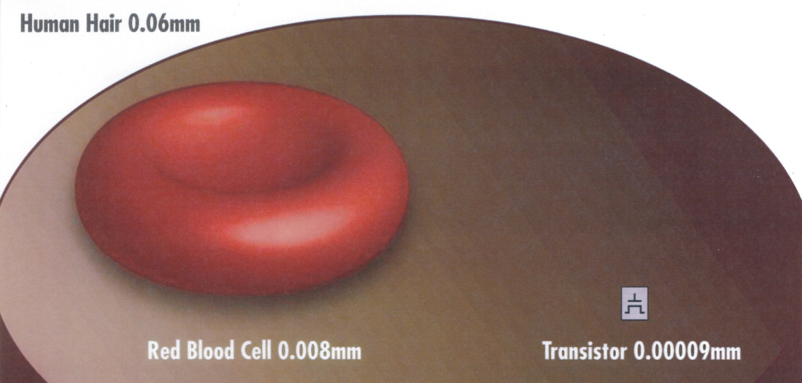
In 2026, leading-edge manufacturing (TSMC N2, Intel 18A) places transistors at a pitch of ~23-45 nm. That's roughly 1/2000th of a human hair.
Computersysteme | Institute of Computer Science | University of St.Gallen
34How large is our 8-bit adder?
About 80 transistors at about 25 nm each:
- 2000 nm if chained in a straight line (+ wiring)
- 225 nm × 225 nm if arranged in a 2D grid («rectangle»)
- 125 nm × 125 nm × 125 nm if arranged in a 3D grid («cube»)
Computersysteme | Institute of Computer Science | University of St.Gallen
35Thank you, Moore!
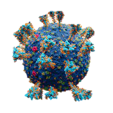
Computersysteme | Institute of Computer Science | University of St.Gallen
36Another Adder…
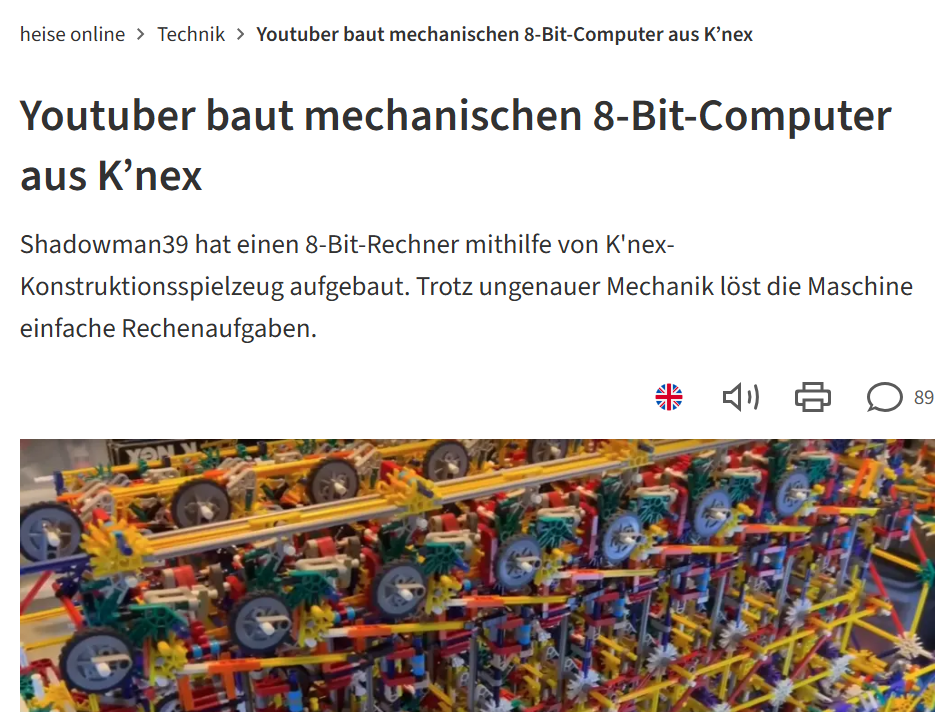
Computersysteme | Institute of Computer Science | University of St.Gallen
37Aaand Another Adder
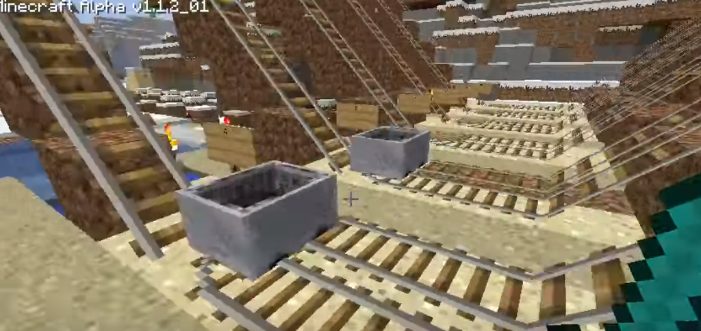
Computersysteme | Institute of Computer Science | University of St.Gallen
38Our Journey So Far…
| Step | Building blocks | Where |
|---|---|---|
| Information | Binary digits + context: numbers, text, pixels and colors, instructions | Lecture 1: done! |
| Logic + arithmetic | School mathematics (logic, set theory); logic operations (NOT, NOR, …, NAND) | Done! |
| Electronics | Logic gates from electronic components (today: transistors) | Done! |
| Calculator | Adder circuits and circuits for other arithmetic functions: a general-purpose calculator! | Done! |
| Processor | Function selector, arithmetic/logic unit, control unit, registers: voilà, a CPU! | Lecture 3 |
| Programs | Instruction sets, machine code and assembly language | Lectures 3 and 4 |
Computersysteme | Institute of Computer Science | University of St.Gallen
39Any Questions / Comments / Doubts / Concerns?
Take-Home
- Through (smart) combinations of logic gates, we can build adding circuits, and you did this!
- Through (smart) combinations of logic gates, we can also build subtractors, multipliers, etc.
- These can be produced in mass quantities and at extremely low prices and sizes
Next: Processors and Assembly
Computersysteme | Institute of Computer Science | University of St.Gallen
40
How to Study this Material?
Basic Depth
- Play nandgame.com, and understand it! (I'm serious)
- Read up on circuits and logic gates, and understand adder circuits
- Keep internalizing number representations, especially hexadecimal (lecture 1)
- Get prepared for the exercise session
Advanced Depth
- Play more levels on nandgame.com
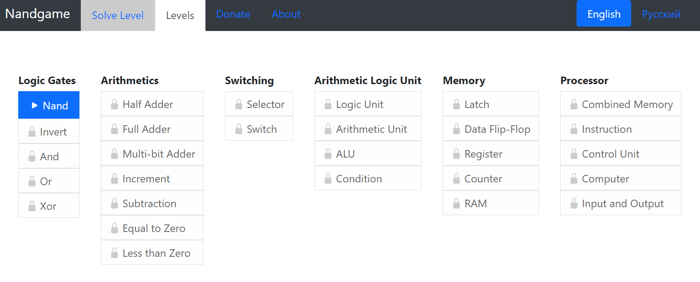
Computersysteme | Institute of Computer Science | University of St.Gallen
41